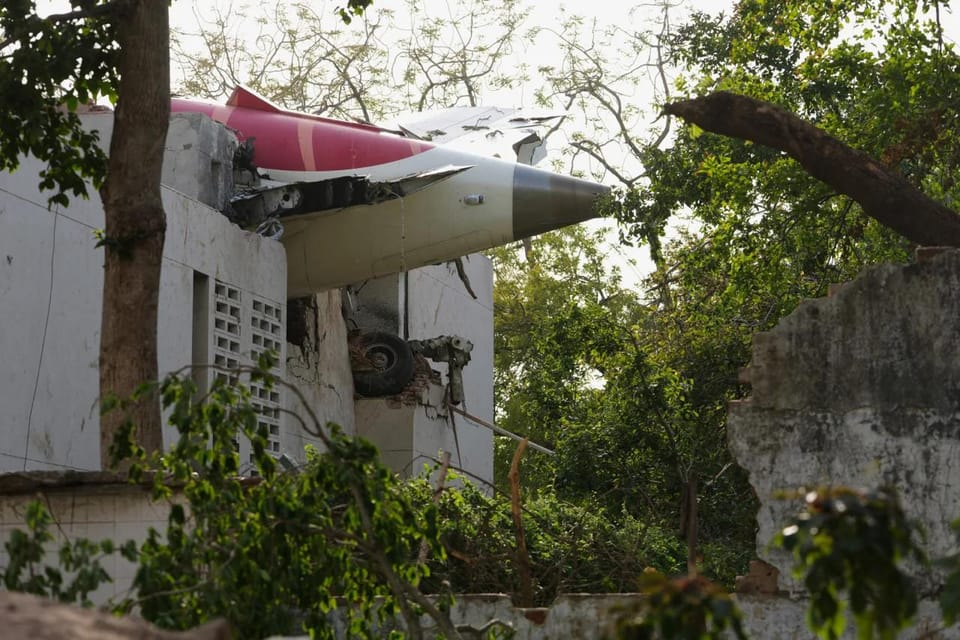

世界苦茶06月13日新闻 | 30条 | 以色列对伊朗展开全面进攻

以色列对伊朗展开全面进攻 | 印度波音787坠毁 | 加州在限制特朗普国民警卫队指挥后被巡回法院驳回 | 特朗普与马斯克和好 | 中国因稀土介入缅甸政治
每天三件事：
苦茶数据
美元兑人民币：7.18（昨日7.18，前日7.18）
美元兑日元：143.53（昨日143.93，前日145.17）
上证指数：3377（昨日3404，前日3407）
标普500指数：6045（昨日6022，前日6038）
比特币：103937（昨日107751，前日109553）
布伦特原油：74.51（昨日69.46，前日66.88）
中国新闻
• 中方回应日军机抵近侦察 ：针对日本官方关切中国航母舰载机在太平洋上空飞行时异常逼近日巡逻机，中国外交部回应时称，中方所开展的活动符合国际法规，敦促日本舰机停止对中国正常军事活动抵近侦察。中国外交部发言人林剑星期四在例行记者会上应询时说，中方在相关海空域开展活动，完全符合国际法和国际惯例。林剑称，中日两国的防务部门正通过既有渠道保持沟通。日本舰机对中国正常的军事活动进行抵近侦察，是造成海空安全风险的根源。中方敦促日方停止此类危险行为。
• 中国战机逼近日军机 ：中国两艘航空母舰在太平洋等海域开展训练之际，日本军方通报，从其中一艘航母上起飞的中国战斗机异常逼近日本巡逻机。日本防卫省星期三在官网发布通报称，上星期六，一架从中国航母山东舰上起飞的歼-15战斗机，对日本海上自卫队的P-3C巡逻机进行长达约40分钟的跟踪。隔天，一架歼-15战机对另一架P-3C巡逻机进行约80分钟的跟踪，期间一度以仅约900米的距离，从日方飞机前方掠过。
• 台军回应大陆通缉电军 ：中国大陆对20名台湾资通电军进行悬赏通缉后，台湾国防部说，资通电军官兵不会受此事影响，并称大陆的法律在台湾不具有司法管辖权。根据台湾国防部网站发布的公告，国防部资通电军星期三表示，中国大陆近期持续以虚构网骇事件，歪曲事实，并对台湾民众执行“跨境悬赏”。此类未经查证，公开台湾民众照片及个资、进而指控犯罪的行为，已违反世界人权宣言所保障的司法权利。资通电军说，中国大陆对台湾不具有司法管辖权，其法律对台湾民众也无实质拘束力。“中共引用其内国法规，系统性操作舆论，意图型塑长臂管辖、打击我军士气”。
• 中国保缅稀土新矿 ：路透社引述四名知情人士说，一支由中国支持的民兵组织正在保护缅甸东部新的稀土矿，北京方面正采取行动，确保对这些矿产的控制，并将其作为与华盛顿进行贸易战的筹码。中国几乎垄断了重稀土加工成磁铁的业务，这些磁铁用于驱动风力涡轮机、医疗设备和电动汽车等关键产品。但北京严重依赖缅甸提供生产这些磁铁所需的稀土金属和氧化物；中国海关数据显示，今年前四个月，缅甸几乎占中国稀土金属和氧化物进口总量的一半。最近，缅甸北部一个主要矿带被一个武装组织占领，该组织正在与受北京支持的缅甸军政府交战，北京获取镝和铽等新矿产库存的渠道也受到了限制。路透社引述两名消息人士说，目前中国矿工正在缅甸东部掸邦的山坡上开采新的矿床。消息人士称，至少有100人日夜轮班，在山坡上挖掘矿石，并使用化学品提取矿物。该地区的另外两名居民透露，他们目睹卡车将位于孟萨镇和孟云镇之间的矿场的物料，运送到约200公里外的中国边境。 （翻评：下次有人问你，中国尊重其他国家主权，不会进行殖民活动，用中国的利益绑架其他国家，那就用这例子。）
• 洪奇昌率团访陆促交流 ：台湾海基会前董事长、民进党创党元老洪奇昌率团前往中国大陆，就生物科技产业等进行交流。据新华社报道，台湾产经建研社理事长洪奇昌星期二至星期四率台湾生技产业界人士赴北京参访交流。报道称，交流团一行参访了北京市高级别自动驾驶示范区、亦庄细胞治疗研发中试基地、两岸科创中心，并与两岸企业家峰会生技小组座谈交流，深入了解大陆生技产业发展情况及政策法规，探讨两岸生物医药等领域前沿发展与合作机遇，取得积极交流成果。
亚太印太新闻
• 印度AI171空难细节公布 ：印度航空AI171次客机6月12日起飞时坠毁。机型为波音787-8梦想客机，机上共有242人，印度籍169、英国籍53、葡萄牙籍7、加拿大籍1。飞机自艾哈迈达巴德起飞约30秒后坠毁，造成至少204人死亡，为全球十年来最严重空难。飞机坠落在机场附近居民区，撞上B.J.医学院学生宿舍。事故发生于中午用餐时段，导致多名医学生罹难。事故飞机于当地时间13:39自23号跑道起飞，曾发出Mayday紧急信号后失联。有视频显示其起落架在飞行早期仍未收起，属异常状况。这是梦想客机自2011年服役以来首次发生坠毁。印度总理莫迪、英国首相斯塔默及国王查尔斯均表示哀悼。塔塔集团作为印度航空母公司，承诺为每位遇难者家庭赔偿1000万卢比，并承担伤者治疗与宿舍重建费用。美国国家运输安全委员会、波音与GE航空已派员赴印调查。
• 赖清德邀在野共商国是 ：台湾执政党民进党主席兼总统赖清德，向国民党和民众党抛出了橄榄枝，邀请这两大在野党共商国是。不过，民众党回应称，民众党将视立法院议程与具体内容，于讨论后再行回复当日与会情形。综合《联合报》、中时新闻网、知新闻等报道，民众党星期四通知，民众党秘书长周榆修稍早接到总统府秘书长潘孟安来电，赖清德订于下星期三上午9时邀请黄国昌及周榆修共商国是。民众党称，感谢潘孟安的通知，然而由于通知时间紧迫，民众党将视立法院议程与具体内容，于讨论后再行回复当日与会情形。
• 日韩领导人拟G7会晤 ：日本共同社星期四引述日本政府相关人士说，日韩两国政府拟在15至17日在加拿大召开的七国集团峰会期间，举行日本首相石破茂与韩国总统李在明的首次面对面会谈，并已就此展开协调。报道说，日本政府考虑到为了应对持续开发核与导弹的朝鲜等，日韩将在安全保障方面紧密合作，因此希望通过石破茂与李在明的会谈建立信赖关系。日韩间存在慰安妇及强征劳工等历史问题，李在明过去曾多次对日本做出严厉发言。
• 越南推省市合并改革 ：越南进行行政结构重大改革，国会批准省市合并计划，将裁减近8万个政府岗位。由于政府希望大幅削减政府开支，越南国会议员星期四投票决定将全国63个省市行政机构精简至34个。国会是以461票赞成、一票反对、三票弃权的结果批准政府的计划。改革后，只有11个省市保持不变，其余省市全部合并。
• 印尼拟建800亿巨型海堤 ：印度尼西亚总统普拉博沃周四宣布，印尼将开始建造一个巨型海堤，总值估计高达800亿美元，将沿着人口最多的爪哇岛绵延数百公里，以防止洪水和海岸侵蚀。普拉博沃周四在雅加达举行的国际基础设施会议上发表演讲时说，这座海堤需要大约20年时间才能建成，将至少跨越500公里，从爪哇岛最西端的城市万丹延伸到东爪哇的格雷西克县。普拉博沃说说：“我不知道哪位总统会完成它，但我将是启动它的人。”
• 朝鲜受损驱逐舰6月12日在罗津造船厂举行下水典礼，命名为“姜健”号。金正恩携女儿出席。
科技新闻
• 三星英伟达投资机器人初创 ：三星电子与英伟达计划入股机器人软件初创企业Skild AI。知情人士透露，三星和英伟达将分别投资1000万美元和2500万美元，相关计划尚未正式公布。这笔融资是Skild的B轮融资的一部分，由日本软银集团领投1亿美元，预计Skild估值达45亿美元。
• 特斯拉起诉前员工泄密 ：特斯拉起诉了该公司高度机密的Optimus 项目的一名前工程师，指控他窃取有关人形机器人的机密信息，并在硅谷成立了一家竞争对手的初创公司。根据周三晚间在旧金山联邦法院提交的诉状，Jay Li 于2022年8月至2024年9月期间在特斯拉工作。特斯拉的律师在诉状中表示， Jay Li 从事先进机器人手部传感器的研发，并获准接触该项目中部分最敏感的技术数据。该诉讼还针对 Jay Li 的公司 Proception Inc 提起，指控他在离职前的几周内将 Optimus 相关文件下载到两部个人智能手机上，随后成立了自己的公司。
财经新闻
• 英对美出口创纪录下跌 ：周四公布的官方数据显示，美国总统特朗普出台新关税措施后，4月份英国对美国的商品出口录得历来最大降幅，进而把英国商品贸易逆差推至三年多来的最高水平。英国国家统计局的数据显示，4月份英国对美国的商品出口额为41亿英镑，远低于3月份的61亿英镑。这是自2022年2月以来的最低水平，也是自1997年开始月度记录以来的最大降幅。这20亿英镑或33%的出口下降，使4月份英国国内生产总值录得比预期大的降幅。英国商会指出，这一降幅度部分反映了制造商在3月份额外发货，以应对关税预期将上涨的情况。即便如此，4月份的商品出口量仍比去年同期低了15%。
• 美失业申请人数攀升 ：美国重复申请失业救济金的人数升至2021年底以来的最高水平，进一步显示失业的美国人需要更长时间才能找到新工作。美国劳工部周四公布的数据显示，截至5月31日当周，持续申请失业救济金的人数升至195万6000人，高于彭博社调查的190万2000人。与此同时，经过季节性调整的首次申请失业救济金人数达24万8000人，高于预期，攀升至2023年8月以来的最高水平。
• 美光宣布2000亿美元投资 ：美国晶片制造商美光科技周四宣布，将投资约2000亿美元，在美国扩大生产和研发活动。这是美国特朗普总统大力推动“美国优先”政策，要将关键制造业活动迁回美国本土后，最新一家承诺在美国大力投资的半导体业者。美光周四在盘前发表声明表示，这笔投资当中约1500亿美元将用于在美国本土的生产设施，另外500亿美元则用于研发。
• 石破茂坚拒不利贸易协议 ：日本首相石破茂星期四说，他不会仓促与美国达成可能有损日本利益的贸易协议。日本一名反对党领导人透露，石破茂认为日美在贸易问题上的立场仍存在较大差距。石破茂预计将于星期天开始的加拿大七国集团领导人峰会期间与美国总统特朗普会晤，但他透露，双方的会晤时间和日期尚未确定。石破茂星期四告诉记者：“如果在我与特朗普会面之前取得进展，那本身就是好事……但重要的是达成对日本和美国都有利的协议。我们不会为了快速达成协议而对日本利益做出妥协。”
• 日大企业信心转负 ：日本政府对1万多家法人企业进行的景气预测调查报告显示，受美国关税政策拖累，今年第二季度日本大企业信心减弱。这份由日本内阁府和财务省星期四联合发布的法人企业景气预测调查显示，由于多数企业信心下滑，第二季度，资本金10亿日元以上的大企业信心指数由上季的2.0降至负1.9。其中，受美国关税政策影响最大的制造业信心指数从上季的负2.4降至负4.8。从行业来看，钢铁行业指数低至负29.1，汽车及汽车部件制造业为负16.1。新华社引述财务省负责人的话说，今后将密切关注美国贸易政策造成的经济下行风险以及物价上涨等因素对企业的影响。
• 中国限制稀土出口时间 ：知情人士称，中国将对美国汽车制造商和制造业业者的稀土出口许可证，设置六个月的期限。《华尔街日报》的报道称，这将使北京方面在贸易紧张局势再次升温时有筹码可用。知情人士也说，作为中国暂时松绑稀土出口限制的交换条件，美国谈判代表同意放宽近期向中国出售喷气发动机及相关零部件以及乙烷等产品的限制。
俄乌战争
• 立陶宛指俄滥用制裁豁免 ：立陶宛周四指责俄罗斯进口商利用医疗制裁的自动豁免机制获取军事物资，呼吁欧盟堵上这个漏洞。立陶宛副外长格里盖特—道吉尔德接受彭博社访问时说，立陶宛的 海关部门在去年以“伪装医疗豁免”为由，阻挡了28,854件货品运往俄罗斯和白俄罗斯。格里盖特—道吉尔德说，医疗制裁豁免是全面自动化的，这意味着海关官员在货物进入俄罗斯之前，须承担着广泛的检查负担。她呼吁欧盟授予成员国更多权力来堵塞这个漏洞，这意味着出口商必须在发送货物之前自行申请豁免。
其他新闻
• 以色列对伊朗发动袭击，伊朗武装部队总参谋长穆罕默德·巴盖里、伊朗国家最高安全委员会秘书阿里·沙姆哈尼已被以色列杀害： 以色列6月13日对伊朗实施先发制人袭击。伊朗首都德黑兰市区传出巨大爆炸声。以色列官员称，约200架以色列战机参与此次行动，已对伊朗各地的目标进行了5轮打击、数百次袭击，至少8个地点成为目标。目前袭击仍在继续。伊朗最高领袖哈梅内伊誓言严惩以色列，并证实多名高级军官和科学家遇害。伊斯兰革命卫队也表示已准备对以色列的侵犯行为做出果断回应。以色列军方称，伊朗在过去数小时内向以色列发射百余架无人机，防御系统正采取行动予以拦截。
• 伊朗将启新铀浓缩设施 ：伊朗周四表示，将启用一个新的铀浓缩设施，以回应联合国属下国际原子能机构通过决议谴责它的核计划，这进一步加剧伊朗与美国和以色列之间的紧张关系。伊朗原子能组织周四在一份声明中表示，新设施已在一个未公开的地点建成。除了启用新设施，位于福尔多现有设施的浓缩技术也将升级，该设施建在德黑兰以南200公里的一座山体内部。声明也说，将在稍后公布其他措施，但没有详细说明。伊朗原子能组织发言人卡迈勒万迪向伊朗官方通讯社说：“这意味着浓缩材料的产量将大幅增加。”
• 伊朗核问题或送安理会 ：联合国核监督机构认定伊朗违反其核不扩散义务，并考虑将此事提交联合国安全理事会。伊朗愤怒回应称，将打造一座新的铀浓缩设施。《纽约时报》报道，联合国国际原子能机构理事会星期四在维也纳通过一项决议，认定伊朗未履行核不扩散义务。IAEA指伊朗持续未提供多处未申报的核材料和核活动。
• 洛杉矶连日抗议升级 ：美国加利福尼亚州洛杉矶市的街头抗议持续六天，星期三有千多人举行抗议集会。在市中心等地点游行，警察严阵以待，紧张气氛持续。洛杉矶星期三连续第二晚实施宵禁，警方证实，前一夜宵禁过程中逮捕200余人。美军同日说，约700名海军陆战队士兵正在加紧开展应对洛杉矶骚乱的训练，包括缓和冲突和人群控制。他们将在48小时内与国民警卫队共同执行任务，并获授权拘留任何在突袭中干扰移民官员或与联邦人员发生冲突的抗议者。洛杉矶警察局在社交媒体上持续通报抗议动态。新华社引述当地时间星期三晚上的最新消息说，洛杉矶市政厅前格兰德公园的大规模抗议人群分散，封堵市政中心多条街道，建议市民避开市政中心区域。
• 加州北区联邦地区法院一法官6月12日晚批出临时限制令，要求总统特朗普将国民警卫队的指挥权交还加州州长纽森，理由是目前局势未达到武装叛乱的定义： 地区法院为限制令设置的生效时间是13日中午；特朗普一方已提起上诉，预计在那之前可获得第九巡回上诉法院受理。洛杉矶市中心区域6月12日连续第三夜实施宵禁。加州民主党参议员帕迪利亚12日在国土安全部长诺姆的记者会上插话质询，被安保拷离现场。
• 第九巡回上诉法院三法官合议庭对地区法院的临时限制令发出行政中止令，允许特朗普政府继续部署国民警卫队。法庭听证会定于17日中午举行。
• 哥国一日24起袭击震动全国 ：哥伦比亚西南部地区在一天内发生24起炸弹和枪击事件，造成至少七人死亡。中国驻哥伦比亚大使馆提醒在哥中国公民加强安全防范，并呼吁他们尽快转移到安全地区。哥伦比亚右翼反对派参议员、总统候选人米格尔·乌里维·图尔瓦伊上周在波哥大竞选活动中遭遇枪击受伤，事件震动全国，令局势骤然紧张。据法新社报道，当地时间星期二，哥伦比亚第三大城市卡利及其周边多个城镇接连发生24起炸弹与枪击袭击，造成至少七人死亡、28人受伤。
• 五角大楼审查AUKUS协议 ：美国五角大楼开始审查拜登时代与澳大利亚及英国签署的核动力潜艇协议，因特朗普政府希望将集体防务的负担转移给盟友并确保美国拥有足够的军舰。彭博社引述美国国防部的声明说，审查将研究前总统拜登的政府2021年按澳英美三边安全伙伴关系签署的这项协议是否“符合总统的美国优先议程”。随着华盛顿和伦敦加强在印太地区存在来应对中国不断增强的军事实力，澳大利亚2021年9月与美国和英国签署AUKUS协议。根据协议，美国将向澳大利亚出售多达五艘弗吉尼亚级核潜艇。
• 蒙古新总理走财政紧缩路线 ：蒙古国国家大呼拉尔6月13日以92.3%的赞成票任命贡布扎布·赞丹沙塔尔为新一任总理。赞丹沙塔尔表示，蒙古国政府将进入财政紧缩模式。新政府将会始终关注工作上的细节，成为一个不空谈、有行动、直面现实的政府。
• 马斯克与特朗普等通话后收回攻击性言论： 知情人士称，马斯克在与白宫方面通了两次电话，其中一次是与总统本人通话后，公开收回了其对总统特朗普的部分攻击言论。知情人士表示，在马斯克与总统发生激烈的公开争执并闹翻后，副总统万斯和白宫幕僚长威尔斯敦促马斯克修复与特朗普的关系。在上周五的一次通话中，这位副总统和威尔斯敦促马斯克结束这场公开的争斗。随后在周一，特朗普和马斯克在双方闹翻以来的首次通了电话。马斯克在周三早些时候公开缓和了他的言辞交锋。马斯克在社交平台 X 上发帖写道：“我对自己上周针对总统特朗普的一些帖子感到后悔，那些帖子太过分了。”